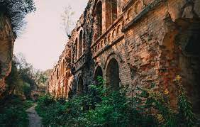
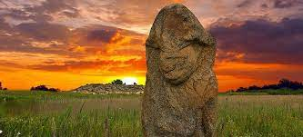
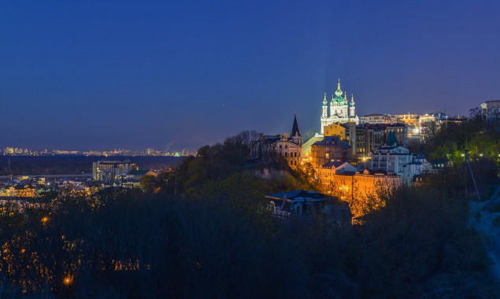

Містичні міста України
Тараканівський форт
 Де: с. Тараканів, Рівненська область.
Про це місце не прочитаєш в журналах-каталогах для мандрівників та не знайдеш серед маршрутів туристів. Саме тут є тунель, розташований під зовнішніми стінами довжиною близько 100 метрів. Проте сьогодні від фортеці залишилися лише руїни.Форт давно оповитий містикою та загадками. Деякі легенди стверджують, що німці тут проводили випробування нової секретної зброї, начебто навіть ядерної.За словами місцевих, саме тут дуже сильний енергетичний центр. А ще, це місце є справжньою домівкою привидів. За два роки тут зафіксовано 13 випадків, коли туристи познайомились з “господарями”. Розповідають, що на початку ХХ століття тут заблукав загін НКВС і безслідно зник. Місцеві не раз чули тут голоси, постріли зброї та бачать тіні.
Око Несамовитого
Несамови́те — одне з найвищих високогірних озер в Українських Карпатах (1750 м над рівнем моря). Розташоване в межах Надвірнянського району Івано-Франківської області.Лежить у межах Карпатського національного парку, в льодовиковому карі (впадині) на східних схилах гори Туркул (масив Чорногора).Довжина озера 88 м, ширина 45 м. Глибина по всій площі коливається в межах 1—1,5 м. Льодовикового походження. Живиться переважно атмосферними опадами. Взимку замерзає. Дно біля південних берегів вкрите валунами, у північній частині поширені піщано-мулисті відклади. Південний і західний берег кам'янистий: на нього осипаються продукти розпаду скельного схилу. Поверхневого стоку озеро не має, але нижче моренного валу витікає декілька струмків — приток Прута.
Легенди про озеро Несамовите:
За кількома легендами, якщо кинути камінь в озеро то можна накликати жахливу негоду, що принесе з собою шквальний вітер і зливи. Інша легенда говорить, що душі всіх людей, які на себе накладають руки (повісяться, втопляться) або заберуть у когось життя, потрапляють у Несамовите. Кажуть, що коли кинути в озеро камінь, тобто потривожити душі грішників, то з'являється з нього білий вершник на білому коні і починає навколо гарцювати. Де кінь ногою ударить - там відлупуються від скель великі шматки льоду. Тоді вискакують з водяної безодні душі грішників, напаковують той лід у великі міхи і розлітаються темними хмарами від Чорногори на всі боки. Де розв'язують торби - там гатить з неба град. А ще кажуть, що коли хтось помирає гріховною смертю, то його душа каменем летить у озеро. І тоді теж всі його мешканці громом і градом з озера вітають в такий спосіб поповнення.
Кам’яна Могила
Де: с. Терпіння, Запорізька областьЦе пам’ятка давньої культури світового значення, що розкинулась на правому березі річки Молочної. Але крім цього, це ще й містична місцина.Кам’яна Могила виконувала функції храму і для мисливців епохи міді й бронзи, і для кіммерійців, скіфів, сарматів, гунів, готів, печенігів, хазар та половців. Є дані, що нацисти не пішли звідси з порожніми руками, а все ж таки прихопили з собою кількадесят знайдених табличок із найдавнішими письменами.Це місце відзначається ще й особливою енергетикою, бо випромінює радіоумпульси частотою 5 гц. Біля кам’яної могили часто виходить з ладу відеопаратура, яка вмикається та вимикається сама по собі і це ще не всі загадки цієї місцини.
Замкова гора
Де: Київ
З замкової гори відкриваються прекрасні краєвиди на Воздвиженку, але крім цього – це одне із моторошних місць у столиці. У 1840 році тут побудували Фролівський монастир, з цих пір і почались перші поховання.Тому вся територія Замкової гори перетворилась на елітне кладовище, де хоронили тогочасну аристократію.З часом біля цього місця витало все більше легенд та пліток, адже ці могили в центрі міста. Зараз ця гора стала притулком для сатаністів та прихильників інших культур. Нещодавно тут з’явилось дві дивні скульптури, які черниці назвали “вівтарем” сатаністів, які проводять на горі обряди. Перейти за посиланням
Де: Київ
З замкової гори відкриваються прекрасні краєвиди на Воздвиженку, але крім цього – це одне із моторошних місць у столиці. У 1840 році тут побудували Фролівський монастир, з цих пір і почались перші поховання.Тому вся територія Замкової гори перетворилась на елітне кладовище, де хоронили тогочасну аристократію.З часом біля цього місця витало все більше легенд та пліток, адже ці могили в центрі міста. Зараз ця гора стала притулком для сатаністів та прихильників інших культур. Нещодавно тут з’явилось дві дивні скульптури, які черниці назвали “вівтарем” сатаністів, які проводять на горі обряди. Перейти за посиланням
Де: Київ
З замкової гори відкриваються прекрасні краєвиди на Воздвиженку, але крім цього – це одне із моторошних місць у столиці. У 1840 році тут побудували Фролівський монастир, з цих пір і почались перші поховання.Тому вся територія Замкової гори перетворилась на елітне кладовище, де хоронили тогочасну аристократію.З часом біля цього місця витало все більше легенд та пліток, адже ці могили в центрі міста. Зараз ця гора стала притулком для сатаністів та прихильників інших культур. Нещодавно тут з’явилось дві дивні скульптури, які черниці назвали “вівтарем” сатаністів, які проводять на горі обряди. Перейти за посиланням